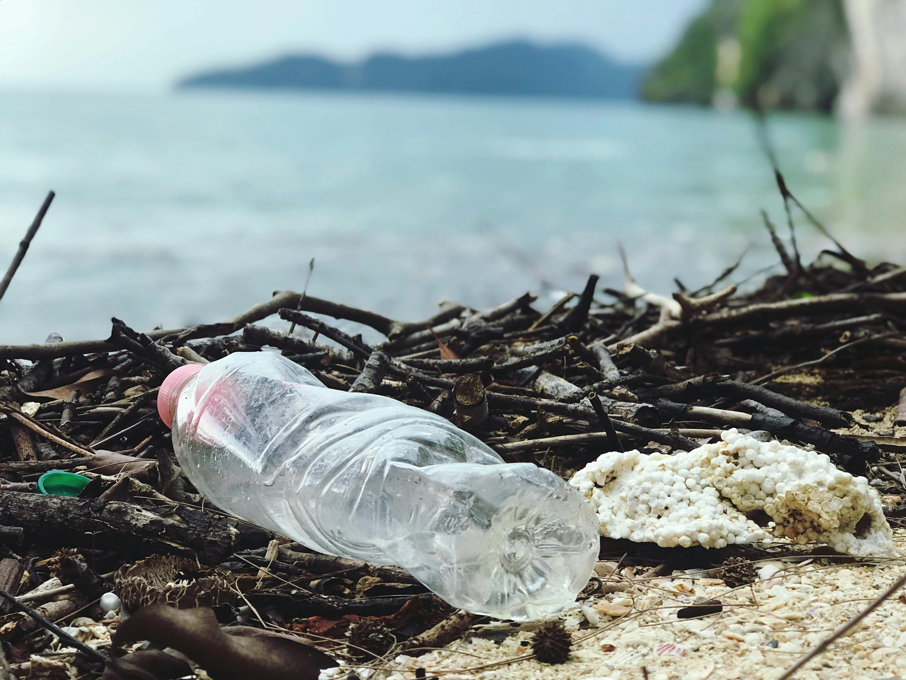

-
The average American produces around 4.9 pounds of trash per day
Despite having less than 5% of the global population, Statista estimates that Americans produce over 12% of the planet's municipal solid waste
-
19 to 23 million tons of plastic waste enter aquatic environments annually
The UN Environment Programme estimates that significant amounts of plastic waste is contributing to the decline of ecosystems.
-
Only 5% of Plastic in the US is recyclable
Recycling plastic isn't going to solve the plastic waste problem. According to WBUR, only 5% of plastics that the US produces can be recycled.
-
